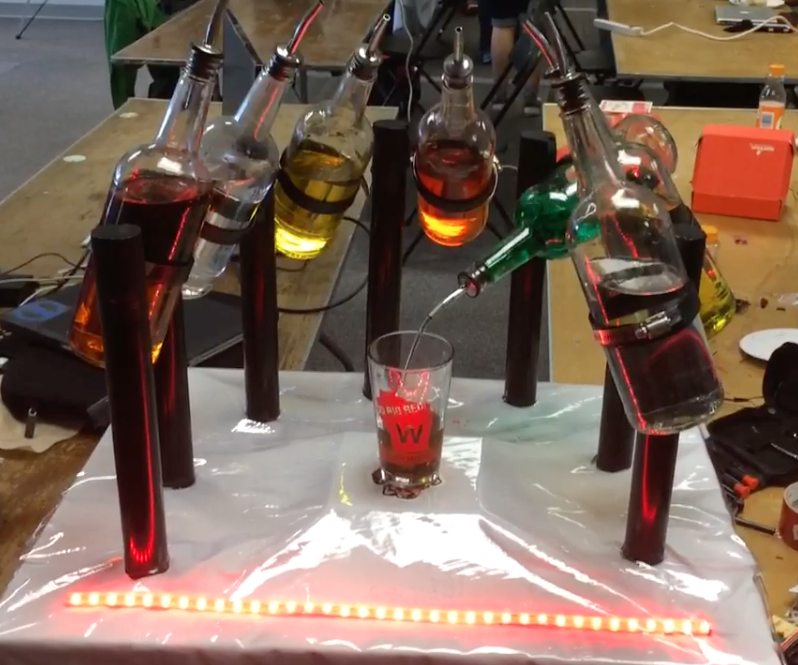

A robotic drink mixer that can serve you different combinations of drinks. Uses a mobile app to order drinks and will automatically pour them.
A suite of tools that athletes can utilize to generate lifting programs and track progress.
A twitter-like website used to authenticate a user, then allow them to post help requests to a feed. A user has a profile that contains all of their requests.
iPhone application to record and playback sounds. Customize sounds and put create songs easily.
Used Ruby’s fitgem API to fetch and display fitbit data on a Rails website. Compared data from my parents such as daily / weekly steps.
Simple chrome plugin utilizing GTmetrix API to generate performance and suggestions about a webpage.